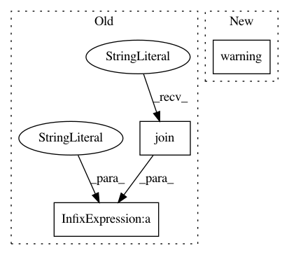

6dd4e9044252c501142a644c7702a4e8614b1159,anvio/tables/genefunctions.py,TableForGeneFunctions,add_new_sources_to_functional_sources,#TableForGeneFunctions#Any#Any#Any#,97
Before Change
elif gene_function_sources_in_db and gene_function_sources_both_in_db_and_incoming_dict:
// some of the functions in the incoming dict match to what is already in the db. remove
self.run.warning("Some of the annotation sources you want to add into the database are already in the db. So "
"anvi"o will REPLACE those with the incoming data from these sources: %s" % \
", ".join(gene_function_sources_both_in_db_and_incoming_dict))
// remove those entries for matching sources:
for source in gene_function_sources_both_in_db_and_incoming_dict:
After Change
self.run.warning(f"A functional annotation source you wish to add to the database ({list(gene_function_sources_both_in_db_and_incoming_dict)[0]}) "
f"is already in the database. Anvi"o will first drop the existing one so the incoming annotation could REPLACE it.")
else:
self.run.warning(f"Some functional annotation sources you wish to add to the database ({", ".join(gene_function_sources_both_in_db_and_incoming_dict)}) "
f"are already in the database. Anvi"o will first drop them so the incoming annotations could REPLACE them.")
// remove those entries for matching sources:
self.drop_functions(database, gene_function_sources_both_in_db_and_incoming_dict)
In pattern: SUPERPATTERN
Frequency: 3
Non-data size: 3
Instances
Project Name: merenlab/anvio
Commit Name: 6dd4e9044252c501142a644c7702a4e8614b1159
Time: 2021-01-08
Author: a.murat.eren@gmail.com
File Name: anvio/tables/genefunctions.py
Class Name: TableForGeneFunctions
Method Name: add_new_sources_to_functional_sources
Project Name: merenlab/anvio
Commit Name: d0438f539d002eff21626d93f682320aac4390f3
Time: 2019-10-08
Author: a.murat.eren@gmail.com
File Name: anvio/bottleroutes.py
Class Name: BottleApplication
Method Name: get_taxonomy
Project Name: merenlab/anvio
Commit Name: 4bcf1a876e2d81136c19c90efa90d4b2f18c5201
Time: 2019-03-31
Author: a.murat.eren@gmail.com
File Name: anvio/completeness.py
Class Name: Completeness
Method Name: __init__